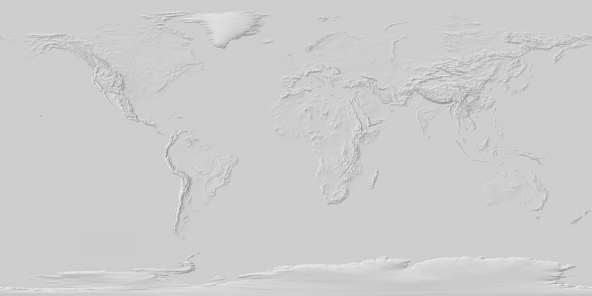
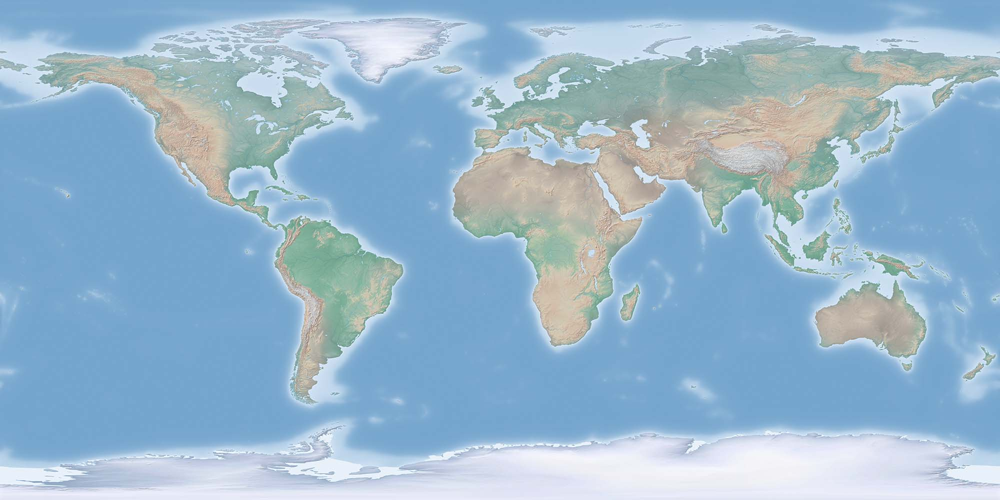
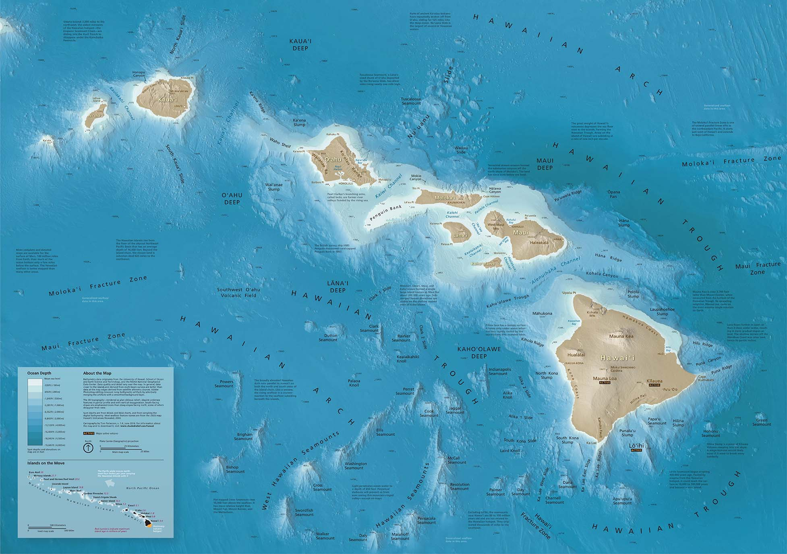
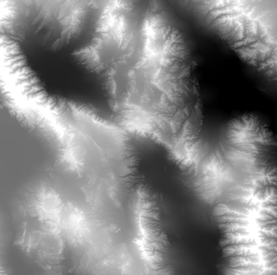
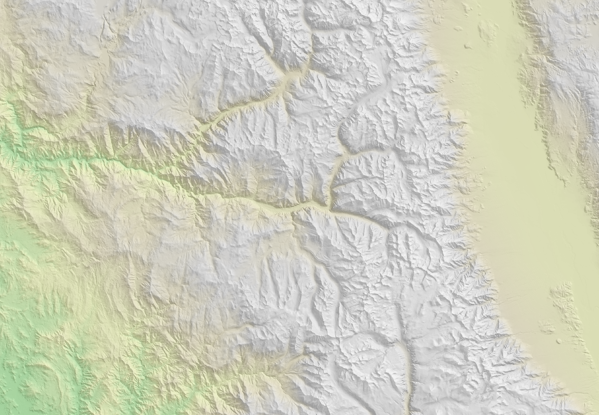
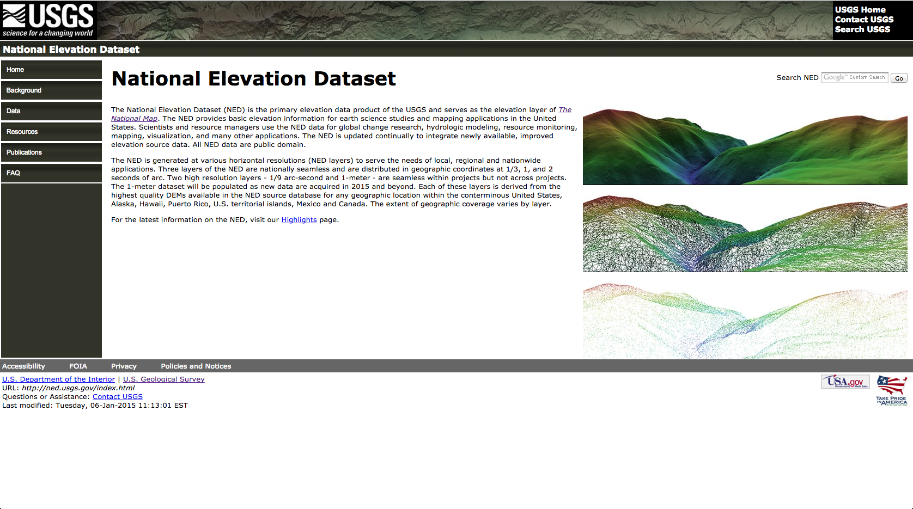

use the
◀ & ▶ keys to navigate
Maptime NYC
Hillshade Tutorial
Hillshades!
What are they?



What kind of data is used?
Digital Elevation Model (DEM)

Why make a hillshade?
Because good cartography = customization

Free & Open Source Software for making hillshades
- GDAL
(command line software)
- QGIS
(desktop GIS software)
Open Data Sources
- National Elevation Dataset (NED)
(hi-res / large scale)
- Shuttle Radar Topography Mission (STRM)
(low-res / small scale)

1. Download DEM data from the USGS.
2. Process the data.
3. Generate the terrain layers.
4. Composite the layers in QGIS, Tile Mill or Photoshop.
All done. Yay!